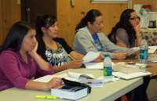

English as a Second Language

What is ESL?
ESL stands for English as a Second Language. ESL classes help students become more fluent in English. Advocacy Outreach’s ESL programs provide a small and comfortable environment for learning a English. They are offered through our day time Family Literacy Program or in evening classes as well.
You can learn to read, write and speak English more clearly and understand the meanings of things you read or hear in English. Together your native language and English prepares you for many opportunities.
Our ESL programs help students learn more about the local culture, values, and society. These ESL programs can assist you to learn precisely what you need to master, according to your current level of understanding.
¿Qué es el ESL?
ESL significa inglés como una segunda Lengua. ESL a estudiantes de ayuda llegan a ser más con soltura en inglés. Advocacy Outreach programas de ESL proporcionan un pequeño y ambiente cómodo para aprender un inglés. Son ofrecidos por nuestro tiempo de día Programa Familiar de capacidad de leer y escribir o en clases nocturnas también. Puede aprender a leer, escribir y hablar inglés más claramente y comprender los significados de cosas usted lee u oye en inglés. Juntas su lengua materna e inglés le preparan para muchas oportunidades. Nuestro ESL programa a estudiantes de ayuda aprenden más acerca de la cultura local, acerca de los valores, y acerca de la sociedad. Estos programas de ESL le pueden ayudar para aprender precisamente lo que usted debe dominar, según su nivel actual de la comprensión.Evening ESL Classes
Our evening classes are for Beginning through Intermediate ESL adults. The classes are held at Manor High School. To attend any of these ESL classes, you must attend an orientation. Orientations are held every September and January. Child care is available for ages 3-10 only.
If you are interested, please call 229-5183 and leave a message with your phone number. Your name will be placed on the waiting list for the next orientation.Clases de ESL de noche
Nuestras clases de noche son de principio hasta adultos de ESL intermedio. Las clases se llevan a cabo en la escuela secundaria Manor. Para asistir a cualquiera de estas clases de ESL, usted debe asistir a una orientación. Orientaciones se llevan a cabo cada septiembre y enero. Cuidado de niños está disponible para las edades 3-10 solamente.
Si usted está interesado, por favor llamar al 229-5183 y dejar un mensaje con su número de teléfono. Su nombre se colocará en la lista de espera para la próxima orientación.
Day ESL Classes
Our day time ESL program is a Family Literacy Program which includes ESL for the parent and Early Childhood Development for children under four years of age. To qualify you need to be able to say “yes” to these questions:
- Do you have at least one child that is grade 3rd or lower?
- Can you come to class every day while your children are in school, for three days a week?
- Do you want to participate in a program that will help you learn English and learn how to help their children well in school?
Please call 229-8178 and leave a message with your phone number. Orientations are held as needed from September to January. You must attend a 6-hour orientation to attend classes.
Clases de ESL de día
Nuestro programa de ESL de tiempo de día es un programa de alfabetización de la familia que incluye ESL para el padre y el desarrollo infantil temprano para los niños menores de cuatro años. Para cualificarte necesitamos ser capaces de decir "sí" a estas preguntas:
• ¿Tienes al menos un hijo que es de grado 3 o inferior?
• ¿Usted puede venir a clase todos los días, mientras que sus hijos van a la escuela, durante tres días a la semana?
• ¿Desea participar en un programa que le ayudará a aprender inglés y aprender cómo ayudar a sus hijos bien en la escuela?Favor de llamar al 229-8178 y deje un mensaje con su número de teléfono. Orientaciones se llevan a cabo según sea necesario de septiembre a enero. Usted debe asistir a una orientación de 6 horas para asistir a clases.